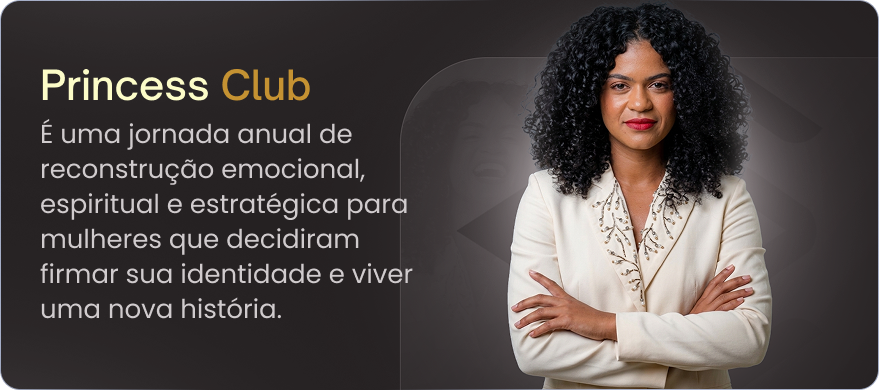
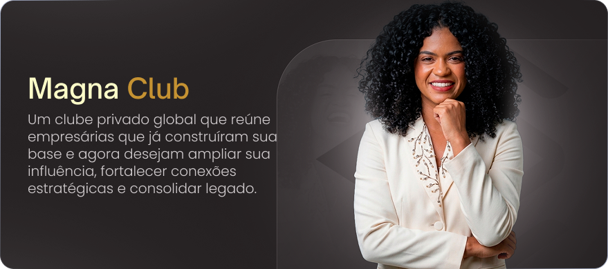

Eu lidero um ecossistema feminino que integra psicanálise, fé e posicionamento para mulheres que decidiram romper ciclos emocionais e assumir seu lugar com clareza, força e direção.

É uma jornada anual de reconstrução emocional, espiritual e estratégica para mulheres que decidiram firmar sua identidade e viver uma nova história.

Um clube privado global que reúne empresárias que já construíram sua base e agora desejam ampliar sua influência, fortalecer conexões estratégicas e consolidar legado.
Estruturo mulheres emocionalmente para que elas deixem de viver a partir da dor e passem a viver a partir da identidade. Através de um método que une consciência psicanalítica, reprogramação de padrões inconscientes e alinhamento espiritual, conduzo mulheres a: